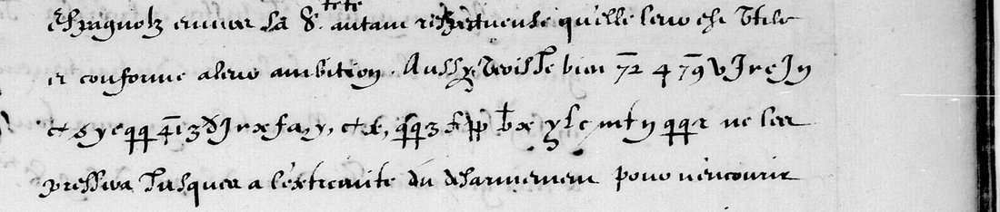
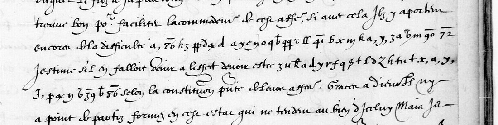
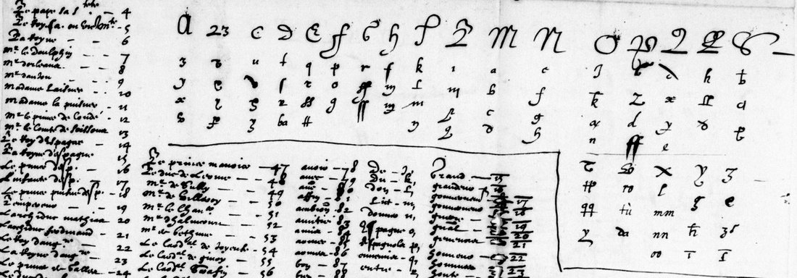

At a glanceExternal key matched · partial · 95 of 98 signs supported
- The letters
- Marie de Médicis, regent after Henri IV’s death, to François Savary de Brèves, ambassador in Rome, 15 September and 10 November 1610, countersigned Brulart. Clear French with a few lines in cipher.
- Where
- BnF Français 3789, stamped ff. 17r and 19r (Gallica btv1b9059628m views 32 and 36). DECODE R2075 and R2076, listed as not deciphered.
- The cipher
- A homophonic alphabet of two to five signs a letter, letters with a comma for short words (a, = ce, y, = et), and plain and overbarred numbers for names and words.
- How it was deciphered
- Brice Dudout found that Henri IV’s 1610 key for Brèves, on BnF fr. 3462 view 112, fits the regent’s passages. Here every glyph was compared with the cell of the key it matches.
- What it says
- That the pope, “recognoissant leurs arogance et sentant sa timidite”, will not be pressed to the point of a humiliating refus; and, in September, that further difficulty would show “their malice and ambition”.
- Still open
- Three signs conflict with the key as it stands on the page, and four barred numbers (six occurrences) are on a part of the key that is not in hand; their values come from Satoshi Tomokiyo.
- Credit
- Decipherment by Brice Dudout, with Claude and Codex (October 2026). Satoshi Tomokiyo identified the key’s shelfmark and corroborated four number values. The key was first broken by George Lasry with Norbert Biermann and Tomokiyo (2021) on Henri IV’s letter, DECODE R2077.
01 The letters
Henri IV was killed on 14 May 1610, and Marie de Médicis governed for the child Louis XIII. Her letters to Brèves in Rome are in BnF Français 3789, a volume of royal and ministerial letters to the ambassador. The BnF notice’s folio numbers run two ahead of the stamped foliation: its no. 11 (“fol. 19”) is stamped f. 17, Gallica view 32, and its no. 12 (“fol. 21 et 23”) is stamped f. 19, view 36. The subject of both is Savoy: in September the journey of the duke’s son to Spain, in November the disarmament after Spain’s refusal. The digits visible on f. 19v are show-through from the recto.


This project transcribed both passages on 21 September 2026 and closed them unread. DECODE’s record of Henri IV’s letter to Brèves of 5 January 1610 (R2077, BnF fr. 3541) said that the key was in “BNF Français 3642”, which is not on Gallica, and that R2075 and R2076 “may be in the same cipher”. The only image of the key here was an 833-pixel photo on that record, and trying its candidate letters for each sign, scored against seventeenth-century French, gave nothing that read.
02 The key in fr. 3462
Brice Dudout looked in BnF Français 3462 instead, a volume of cipher keys, and found the table on Gallica view 112. Satoshi Tomokiyo has since confirmed to him that “3642” on R2077 was a mistyping of 3462 and that this is the Henri IV–Brèves key image he knew. The same volume holds the office’s table for Brèves’s earlier Constantinople cipher (f. 103; see the 1603 letters, a different cipher, with its own page).

The table gives each letter two to five signs, many of them Latin letters used as signs: under m stand a, b, c and a delta; under n stand c, a hooked f, g and h. A letter followed by a comma is a word: a, ce, x, en, y, et. Plain numbers 4–99 are persons and words from a to c (72 is “le Sr Conchine”, 86 “armee”); overbarred numbers run from 1̄ to 4̄6 across words from f to m (3̄9 le, 4̄1 leurs). The barred numbers above 46 that the regent’s letters use, 7̄2, 7̄9, 8̄6 and 9̄0, belong to a continuation for later letters of the alphabet that is not on view 112. Tomokiyo gave Brice their values: que, re, se, tion.
03 15 September 1610
Two passages on f. 17r, lines 22–24, in Brice Dudout’s reading. The clear text of the letter is in roman, the deciphered words in italics; brackets are his, the notes after them are from the check below.
… si avec cela ilz y apportent encores de la difficulté, ce sera trop manifester leurs malice et ambition que j’estime, s’il en falloit venir a l’effet, devoir estre acompagne[z?] d’imprudence et [de?] foiblesse selon la constitution presente de leurs affaires.
“… if on top of that they still raise difficulty, it will show their malice and ambition too plainly; and that ambition, I think, if it came to action, would be accompanied by imprudence and weakness, given the present state of their affairs.”
- am[b?]ition, foi[b?]lesse: both signs are the first b of the key, a b with a flag. The key settles Brice’s brackets.
- acompagne[z?]: the sign is like a ß with a descender. On view 112 it is either the third e (drawn as ß) or the second z (a 3 joined to a long s). With e the word is acompagnee, agreeing with ambition, which is the better grammar. The images do not settle it.
- [de?]: the sign is J,, which on view 112 stands against an entry that reads De (the first word of its column, before Du and Don). Probable.
- se (twice), tion and que are barred 86, 90 and 72, which are not on view 112.
04 10 November 1610
Two lines on f. 19r, lines 5–7, the passage of catalogue item 25:
Aussi vois-je bien que le pape re[c?]ognoi[s?][s?]ant leurs arogance et [s?]entant sa timidite ne sera pressé jusques a l’extremité du desarmement pour recevoir enfin la honte d’un refus absolu …
“So I see well that the pope, recognising their arrogance and feeling his own timidity, will not be pressed to the extreme of disarmament only to receive in the end the shame of an outright refusal …” Brèves’s reply of 9 December 1610, in his Rome letter-book (BnF Cinq cents de Colbert 351, pp. 724–730), answers the letter on the pope and the Spanish disarmament, in paraphrase.
- [s?]entant: the first sign is the looped crossed t that the key gives for s. Settled.
- re[c?]ognoissant: the sign is the flagged b, the same as in ambition; none of the four c signs of view 112 (u, a hook, a 5-shape, a ʒ) looks like it. The word needs c.
- recognoi[s?][s?]ant: the first s is the looped t of s; the second is a small loop with a diagonal stroke that has no cell under s (it is closest to the fourth a).
- leurs: barred 41, whose entry on view 112 reads Leurs to me, with an uncertain ending; Tomokiyo gives leur. It is one code either way, and leur arogance is the more usual grammar.
05 The check
On 20 October Gallica refused image requests from here, so the check used the copies in Brice’s repository: the key at 1800 × 1580 pixels and his line crops of the two folios, both BnF images. Each of the 98 glyphs was set against the cell of view 112 that it matches, one line per glyph in alignment.tsv.
| Glyphs | 15 Sept | 10 Nov | All |
|---|---|---|---|
| In a cell of view 112 that gives Brice’s value | 52 | 34 | 86 |
| Fit an entry whose word is not certain (4̄1, J,) | 2 | 1 | 3 |
| Barred numbers not on view 112, values from Tomokiyo | 4 | 2 | 6 |
| Conflict with the key as it stands | 1 | 2 | 3 |
| Total | 59 | 39 | 98 |
So 89 of 98 glyphs (90.8%) are supported by the page itself and 95 (96.9%) with Tomokiyo’s values. The words manifester, malice, d’imprudence, arogance and sentant sa timidite come out of the table letter for letter, which is hard to get by chance from a homophonic key over this many signs. The three conflicting signs fall inside words that the context fixes. They are what Brice calls variants of a “very close” key: either the clerk slipped, or the regent’s table differed from Henri IV’s in a few cells.
The check also showed why the 21 September attempt failed. Our transcription missed the bars over 72 and 79 (plain 72 is “le Sr Conchine”, which sent the first guess wrong), wrote two signs of 10 November as one (3 and a raised crossed delta) and one glyph of 15 September as two (tu, a single sign for u, as Brice found), and gave one letter to shapes that the key keeps apart: our d was the p, m or r of the key, our z its a, p or t. With the 833-pixel photo those shapes could not be told apart.
06 What remains open
- re[c?]ognoissant, one sign: the key gives b. Needs the regent’s own table, or Lasry’s decipherment of R2077 to see whether Henri IV’s letter uses this sign for c.
- The second s of recognoissant, one sign: no s cell on view 112 has it. Same remedy.
- acompagne[z?] or acompagnee, one sign: the two candidate cells differ by a stroke that the image does not settle.
- Barred 72, 79, 86 and 90, six occurrences: the part of the key with barred numbers above 46 is not in hand; the values are Tomokiyo’s, and each fits its context.
Brice asked whether this project has Lasry’s R2077 decipherment or a comparison with the Henri IV letter of 5 January 1610. It has neither; that letter is the obvious next check of the key’s variants.
07 Sources
- BnF Français 3789, ff. 17r and 19r: Gallica view 32, view 36. DECODE R2075 (15 Sept) and R2076 (10 Nov).
- BnF Français 3462, the key: Gallica btv1b9058227h view 112. DECODE R2077 (Henri IV to Brèves, 5 January 1610, BnF fr. 3541 ff. 4–7), broken by George Lasry with Norbert Biermann and Satoshi Tomokiyo in 2021; its note gives the shelfmark as 3642.
- Brice Dudout, “Marie de’ Medici: two letters to Rome, 1610”, Ciphered Europe (CC BY 4.0; repository), and his emails of 16 and 19 October 2026.
- Satoshi Tomokiyo, Cryptiana, ciphers of Louis XIII, and his feedback to Brice Dudout, 17 October 2026.
- Brèves’s reply of 9 December 1610: BnF Cinq cents de Colbert 351 (Gallica btv1b10033961z), pp. 724–730.
Decipherment by Brice Dudout (with Claude and Codex), cross-posted with his permission; the sign-by-sign check, transcriptions and notes are in targets/breves1610/. Manuscript images: Bibliothèque nationale de France, fr. 3789 and fr. 3462, via Gallica.